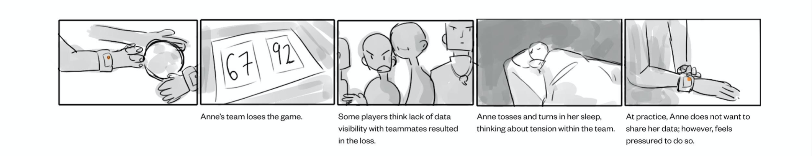
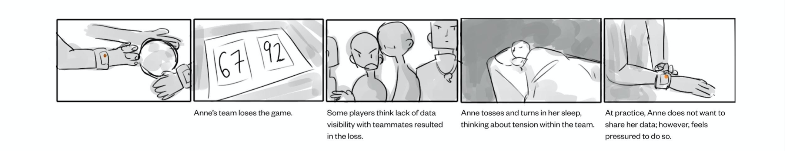

Process Overview
For this project, I ideated 20+ possible future sports tracking technologies. As a group, we discussed and examined how personal values that could be strengthened or overuled by the technologies. For this discussion, we also looked at and analyzed interviews from student athletes, coaches, and athelete medical workers about both concerns and appreciations about tracking technology in the context of athletes.
My team picked one of our ideated technology, decided on what values to emphasize in our video, then created the video. My role includes writing, storyboarding, scripting, and editing the video.
Snapshots
Ideation
Here are a couple example ideations out of the 60+ that our group came up with. The first 3 are mine, and the last on is the tech portrayed in the video. We focused on the tracking and project aspect of the idea.
Value Tensions
After seeing interviews where participants mentioned values like accountability, honesty, and privacy, we decided to focus on highlighting these values in our video.
Storyboard
This is the storyboard that I drew for the video. A couple locations were changed to accomodate access to filming locations, but the overall story is the same.
 

The Final Video
Please check out the site linked above to view the final video. It is titled "EnVisible."